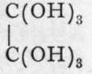

Acids Containing Carbon
Description
This section is from the book "Modern Chemistry", by William Ramsay. Also available from Amazon: Modern Chemistry: Theoretical and Modern Chemistry (Volume 2).
Acids Containing Carbon
An enormous number of acids containing carbon is known, in which the acidic carbon atom is combined with oxygen and hydroxyl, and also with hydrocarbon residues, such as methyl or ethyl, or with some more complex group of carbon atoms. The simplest of these is formic acid, H-C-OH. Acetic acid is methyl-formk acid ethyl-formic acid is named propionic acid ; its formula is |
Oxalic acid is to be regarded as di-carboxyl, the name carboxyl being a contracted form of 6 ' carb(onyl hydroxyl" ; it is commonly written -CO-OH.
Formic acid (from formica, an ant) is contained in ants and stinging nettles. Sodium formate is produced when carbon monoxide is left in contact with sodium hydroxide ; the reaction takes a considerable time : CO + NaOH = H-CO-ONa. It is also formed by heating oxalic acid, better in presence of glycerine: (CO-OH)2 = CO2 4-H-CO-OH. It is a colourless, pungently smelling liquid, boiling at 99°, and a fairly strong acid in aqueous solution ; it is poisonous. Its salts are crystalline, and possess the colours of the metallic ions which they contain. When warmed with concentrated sulphuric acid, or with other substances capable of withdrawing water, it yields carbon monoxide. Yet CO is not the true anhydride of formic acid, seeing that an anhydride can be obtained only from loss of the elements of water from hydroxyl groups, for formic acid contains the group H-C=; the real anhydride would be ; it is unknown, although its silicon analogue has been prepared.
Acetic acid is the acid constituent of vinegar, and is a solid, melting at 170 to a liquid, boiling at 118°. It can be formed synthetically by bringing into contact carbon dioxide and sodium methide, a compound of the formula Na-CH3 ; the equation is : Na-CH3 + CO2 = H3C-CO-ONa ; the sodium salt, distilled with sulphuric acid, yields acetic acid. It is produced on a large scale by the distillation of wood ; the distillate consists mainly of acetic acid and methyl alcohol ; it is neutralised with lime, and distilled, when the alcohol passes over, leaving behind the calcium acetate ; this is evaporated to dryness, and heated, so as to char tarry matters, also produced when wood is distilled ; the calcium salt is finally distilled with sulphuric acid. Acetic acid is also formed by the oxidation of aldehyde (p. 88), which is itself an oxidation-product of alcohol. The connection between these bodies is: CH3-CH2-OH, CH3-CH=0, and Aldehyde may be regarded as the anhydride of CHo-CH=(OH)2, and acetic acid of CH3 = C(OH)3. The usual oxidising agent is chromic acid ; if the product of oxidation is conveyed away as it is formed by sloping the condenser downwards, aldehyde is obtained ; if the aldehyde is returned to the oxidising mixture by sloping the condenser upwards, and cooling with ice and water, the product is acetic acid. The oxidation is also effected by an organism called " mother of vinegar " ; sour wine or beer is allowed to trickle down a cask filled with shavings of beech-wood, on which the slimy masses of the organism are growing ; oxygen enters, and the vinegar flows out at the bottom of the cask.
On distilling acetic acid with phosphorus pentachloride/ hydroxyl is exchanged for chlorine : 4CH3-CO-OH + PCl5 = 4CH3-CO-Cl + H3PO4 + HCl. The compound obtained is named acetyl chloride ; acetic acid may be regarded as hydroxide of the group (CH3-C=0)-, and on treating acetyl chloride with water it is at once formed : CH3-COCl + H-OH = CH3-CO-OH + HC1. And aldehyde may be regarded as a hydride of acetyl, (CH3-CO)-H. A similar body cannot be made from formic acid, for it decomposes into carbon monoxide and hydrogen chloride : H-CO-C1 = CO + HC1.
Oxalic acid is contained as hydrogen-potassium salt in the plants sorrel and rumex. It can be prepared by the oxidation of sugar with concentrated nitric acid, or by-heating sawdust with a mixture of caustic soda and potash in shallow trays; on treating the charred residue with water, sodium oxalate, a comparatively insoluble salt, remains, while the excess of alkali dissolves; the sodium oxalate is extracted with boiling water, and calcium chloride is added; this precipitates the almost insoluble calcium oxalate; and on digesting it with the equivalent amount of sulphuric acid, sparingly soluble calcium sulphate remains, while oxalic acid dissolves. The filtered solution, when evaporated, deposits crystals of ortho-oxalic acid,  which, at ioo°, dehydrate to Oxalic acid is a di-basic acid, and its salts, like those of formic and acetic acids, have the colour of the positive ion. It cannot be dehydrated further, for the anhydride, which should possess the formuhdecomposes into CO and CO2.
Salts of these acids with alcohol radicals, such as methyl and ethyl, are prepared by saturating a solution of "the acid in the respective alcohol with hydrogen chloride, and then distilling: (COOH)2 + 2CH3OH = (COOCH3)2 + 2HOH. The hydrogen chloride serves to withdraw water, and prevent it acting on the product. Such salts, which are generally colourless liquids or solids, possessing a pleasant smell, are called " esters." As a rule they are sparingly soluble in water, and are not ionised in solution, thus differing from salts of the metals. When boiled with alkalies, the ester being returned by means of an inverted condenser into the boiling-flask, they change into salts of the alkalies, and the alcohol: CH3-CO-0-CH2-CHs + KOH.Aq = CH3-CO-OK.Aq + CH3-CH2-OH. This change is also effected by heating with water in a sealed tube; it is accelerated by the presence of hydrogen ions, and therefore by the presence of strong acids, such as hydrochloric acid. Decomposition of this kind by alkalies is called " saponification 99 5 if effected by water the term " hydrolysis is applied to it.
Continue to: